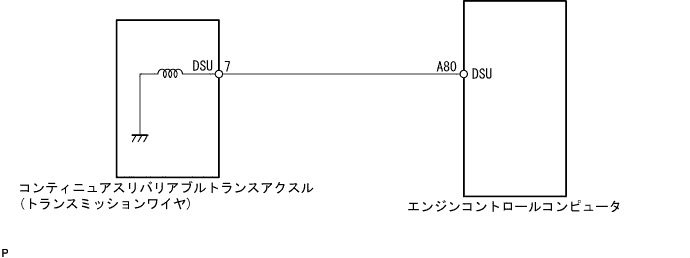
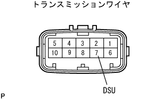
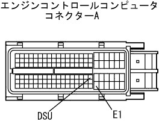

DTC P2763/64 DSU Solenoid Circuit (High) |
DTC P2764/64 DSU Solenoid Circuit (Low) |
| DTC No. | DTC Detection Conditions 1. Diagnosis conditions 2. Malfunction status 3. Malfunction duration 4. Other | Inspection Area |
|---|---|---|
| P2763/64 |
|
|
| P2764/64 |
|
|

| Step 1 | Inspect Continuously Variable Transaxle Assembly (Solenoid DSU) |
 |
Disconnect the transmission wire connector.
Using SST (Toyota electrical tester), measure the resistance between the connector terminals.
| Tester Connection (Terminal Name) | Condition | Standard |
|---|---|---|
| 7 (DSU) - Body ground | Always | 11 to 13Ω |
|
| ||||
| OK | |
| Step 2 | Inspect Wire Harness and Connector (Continuously Variable Transaxle [Transmission Wire] - Engine Control Computer) |
for reference. |
Connect the transmission wire connector.
Disconnect engine control computer connector A, and using SST (Toyota electrical tester), measure the resistance between each terminal. (For Terminals of ECU, see)
| Tester Connection (Terminal Name) | Condition | Standard |
|---|---|---|
| A80(DSU) - A104(E1) | Always | 11 to 13Ω |
|
| ||||
| OK | |
| Step 3 | Replace Engine Control Computer |
Reference| NEXT | |
| Step 4 | TaSCAN (A/T / CVT Learned Value Initialization, G Sensor 0-point Learning and CVT Hydraulic Pressure Learning) |
| Replacement Parts |
|
Using SST (TaSCAN), perform A/T/CVT learned value initialization, G sensor 0 point learning and CVT hydraulic pressure learning.
for reference.Check the DTCs again. (see)
| NEXT | ||
| ||
| Step 5 | Replace Continuously Variable Transaxle Assembly |
Reference| NEXT | |
| Step 6 | TaSCAN (A/T / CVT Learned Value Initialization, G Sensor 0-point Learning and CVT Hydraulic Pressure Learning) |
| Replacement Parts |
|
Using SST (TaSCAN), perform A/T/CVT learned value initialization, G sensor 0 point learning and CVT hydraulic pressure learning.
for reference.Check the DTCs again. (see)
| NEXT | ||
| ||